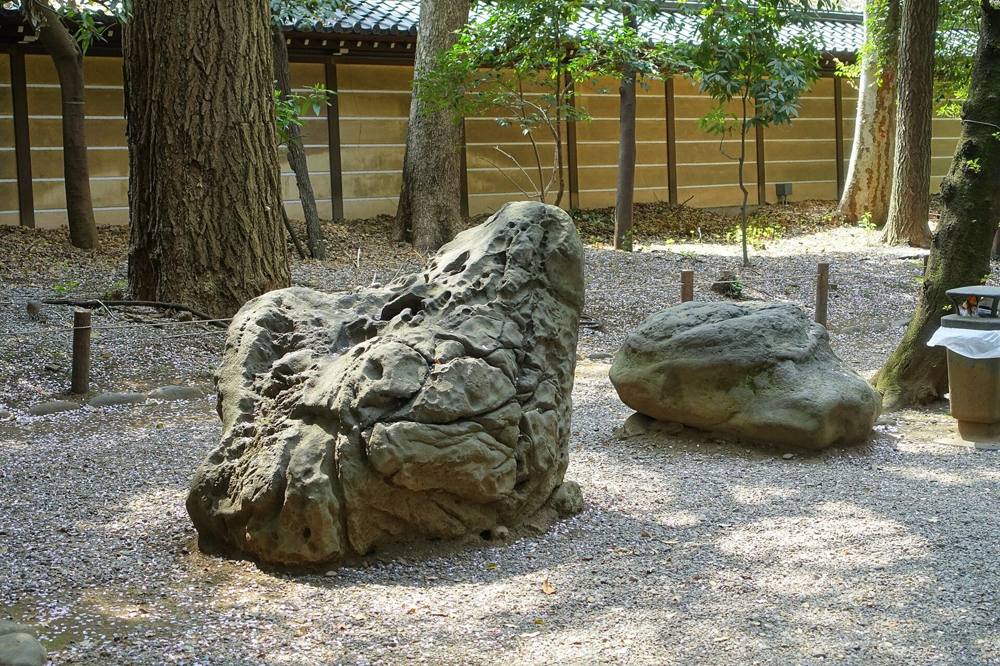

[한일수교 60년·끝] 레드라인은 지켰다, 그러나 한 발도 나아가지 않았다
2026년 광복절, 대통령은 과거사를 빼고 총리는 참배를 피했다
한중일 FTA는 14년째 멈춰 있고 RCEP 26조달러의 91%는 여전히 한중일
독일과 프랑스는 공동 교과서를 썼고, 한중일은 2005년 책 한 권에서 멈췄다
한일수교 60년 연재를 맺는다. 60년이 보여 준 것은 두 가지다. 과거를 직시하지 않으면 미래 협력도 없다는 것, 그리고 경제협력 없이는 평화도 만들어지지 않는다는 것이다. 2026년의 한일관계는 그 두 가지 사이 어디쯤에 멈춰 서 있다.

1. 2026년 광복절, 양쪽이 지킨 선
2026년 8월 15일 다카이치 사나에 일본 총리는 야스쿠니 신사를 참배하지 않았다. 공물 값만 사비로 냈고 총리가 아니라 자민당 총재 자격이었다. 2025년 10월 가을 예대제와 2026년 4월 봄 예대제에 이어 세 번째다.
같은 날 이재명 대통령의 광복절 경축사를 두고 일본 언론은 한일 미래 협력을 강조했다고 보도했다. 2025년 경축사에서 "과거를 직시하되 미래로 나아가는 지혜"라고 했던 것과 견주면 과거사 대목이 줄었다.
양쪽이 서로의 선을 넘지 않았다. 그래서 충돌은 없었다. 그러나 앞으로 간 것도 없다.
대신 다른 이들이 갔다. 2026년 8월 15일 오전 고이즈미 신지로 방위상이 야스쿠니를 참배했다. 스즈키 슌이치 간사장, 아리무라 하루코 총무회장, 니시무라 야스토시 선거대책위원장도 단체로 참배했다. 자민당 핵심 간부가 패전일에 함께 간 것은 드문 일이다.
그리고 열흘 남짓 앞선 8월 4일, 다카이치 내각의 첫 방위백서가 나왔다. 독도를 일본 고유 영토라 적었다. 2005년 이후 22년째다. 경계·감시 지도에는 독도 둘레에 파란 선을 그었고 방공식별구역 지도에는 한국 방공식별구역 안의 독도를 '다케시마'로 적었다. 한국 외교부는 주한 일본대사관 총괄공사를 불러 항의했다.
총리는 참배를 비껴가고 문서는 영토를 주장한다. 레드라인은 지켜졌지만 그 안의 자리는 그대로다.
2. 14년째 멈춘 한중일 FTA
경제 쪽에서도 멈춘 것이 있다. 한중일 자유무역협정(FTA)은 2012년 11월 20일 협상을 시작해 2019년 11월 16차까지 가고 멈췄다. 14년째다.
2025년 3월 30일 한중일 경제통상장관회의가 5년 3개월 만에 열렸다. 안덕근 산업통상자원부 장관과 무토 요지 일본 경제산업성 대신, 왕원타오 중국 상무부 부장이 FTA 협상 재개를 논의했다. 2026년 10월까지 협상은 다시 열리지 않았다.
그사이 양자 협상은 움직였다. 한국과 중국은 2026년 3월 18일 상무·산업장관회의에서 공급망 핫라인을 가동하고 FTA 공동위원회를 다시 열기로 했고, 8월 31일 서비스·투자 후속협상을 재개했다.
역내포괄적경제동반자협정(RCEP)은 2022년 발효됐다. 15개국 국내총생산(GDP) 합계가 26조달러로 세계의 30.8%다. 그 가운데 한중일이 23조7000억달러, 91%를 차지한다. 사실상 한중일 경제권인데 셋이 직접 묶은 협정은 없다.
RCEP의 관세 철폐율은 한중 사이 70%, 한일 사이 80% 수준이다. 대외경제정책연구원은 한중일 FTA로 90% 넘게 철폐하면 역내 무역이 20% 늘고 세 나라 GDP가 각각 1~2% 오른다고 봤다. 14년을 멈춘 값이다.
3. 반도체는 서로가 서로의 거래처다
공급망에서는 세 나라가 이미 얽혀 있다. 일본은 소재와 장비, 한국은 생산, 중국은 시장을 갖고 있다.
소재·부품·장비 100대 핵심 품목의 대일 의존도는 31.4%에서 24.9%까지 내려왔다. 그래도 포토레지스트 같은 일부 공정 소재는 일본 기업이 70% 안팎을 공급한다.
삼성전자는 일본 요코하마에 400억엔을 들여 차세대 반도체 패키징 연구개발 센터를 세운다. 일본 정부가 200억엔을 보조금으로 댄다. 반대로 도쿄일렉트론과 신에쓰화학에는 삼성전자와 SK하이닉스가 큰 고객이다.
2026년 6월 2일 삼성전자 시가총액은 1조5410억달러로 세계 10위에 올랐다. 같은 해 도쿄증시 1위인 도요타는 9월 18일 종가 기준 44조1000억엔이다. 국제통화기금이 2026년 10월 내놓은 전망을 보면 한국의 1인당 GDP는 4만3512달러로 일본을 8112달러 앞선다.
자리는 바뀌었지만 서로를 대신할 수는 없다. 그 사실이 협력의 바탕이다.
4. 독일과 프랑스는 교과서를 함께 썼다
경제만으로는 부족하다는 말은 독일이 증명했다.
1970년 12월 빌리 브란트 서독 총리가 바르샤바 게토 추모비 앞에서 무릎을 꿇었다. 독일 기본법 제139조는 나치와 군국주의 청산을 위한 법률의 효력을 명시한다. 학교에서는 나치 역사를 필수로 가르친다.
1963년 독일과 프랑스는 엘리제 조약을 맺었다. 두 나라 역사학자들이 함께 교과서를 썼고 2006년 공동 역사교과서가 나왔다. 두 나라 학생이 같은 책으로 역사를 배운다. 1993년 유럽연합 단일시장이 선 바탕이 거기 있다.
한중일에도 시도가 있었다. 2002년 세 나라 학자들이 공동 집필을 시작해 2005년 『미래를 여는 역사』를 냈다. 그러나 일본 정부는 교과서로 채택하지 않았다. 21년이 지났고 두 번째 책은 나오지 않았다.
김대중 대통령은 2006년 전남대 강연에서 "독일은 침략전쟁의 잘못을 철저히 인정하고 충분한 사과와 배상을 했다"며 "일본은 독일로부터 배워야 한다"고 했다. 20년이 지났다.
5. 미국의 요구와 자율성
트럼프 행정부는 동맹국에 더 많은 몫을 요구한다. 일본에는 방위비를 GDP 대비 3.5%, 관련 경비까지 5%로 올리라고 한다. 일본은 2027년도 목표였던 2%를 2025년도에 이미 채웠다. 3.5%를 적용하면 한 해 20조엔을 넘는다.
2025년 10월 29일 도널드 트럼프 대통령이 일본을 찾았으나 그 길의 목적지는 다음 날 부산에서 열린 미중정상회담이었다. 일본이 약속한 5500억달러 투자는 재협상 없이 그대로 갔다.
그 사이에서 지역 스스로 풀 수 있는 자리가 좁아진다. 북한 문제가 그렇다. 중국은 북한에 영향력이 있고 일본은 경제 지원 능력이 있으며 한국은 남북 대화를 끌 수 있는 자리에 있다. 세 나라가 함께 할 수 있는 일인데 세 나라가 묶이지 않는다.
6. 60년이 남긴 셈
60년을 돌아보면 분명한 것이 있다.
과거 청산 없는 협력은 모래 위의 성이다. 경제와 역사를 갈라서 따로 가겠다는 시도는 60년 동안 되풀이됐고 되풀이해 실패했다. 2026년 광복절에 양쪽이 선을 지킨 것은 충돌을 피한 성과이지 전진은 아니다.
그러나 반대도 맞다. 역사만 들고는 아무것도 못 움직인다. 2026년 10월 15일 방콕에서 한일 통화스왑 100억달러가 2029년 11월까지 연장됐다. 2026년 5월 19일 안동에서 여섯 번째 셔틀외교가 이뤄졌다. 2026년 1월부터 7월까지 한국을 찾은 일본 사람은 228만명으로 외국인 가운데 가장 많았다. 이런 것들이 쌓여 바닥이 된다.
1998년 김대중 대통령과 오부치 게이조 총리가 맺은 공동선언의 문장은 지금도 유효하다. "과거를 직시하며 미래로 나아간다." 28년이 지났는데 그 문장을 넘어선 합의는 아직 없다.
새로운 60년은 거기서 시작한다. 역사를 직시하고, 경제를 묶고, 교과서를 함께 쓰는 일이다. 셋 가운데 하나만 해서는 60년이 또 간다.
참고문헌
·"다카이치, 야스쿠니 신사 참배 대신 공물… 日방위상·자민당 간부들은 참배", 한국일보, 2026년 8월 15일.
·"일본 언론 '이 대통령 광복절 경축사, 한일 미래 협력 강조'", 연합뉴스, 2026년 8월 16일.
·"다카이치 첫 방위백서에 '독도는 일본 땅'…22년째 억지 주장", 경향신문, 2026년 8월 4일.
·"한·중, FTA 서비스·투자 후속협상 재개", 아시아경제, 2026년 8월 31일.
·"한일, 100억弗 규모 통화스와프 3년 연장", 파이낸셜뉴스, 2026년 10월 15일.
·"韓 1인당 GDP 첫 4만 달러 전망… 日 추월", 아주경제, 2026년 10월 13일.
·"한중일 FTA 협상 재개", 서울경제, 2025년 3월 30일. https://www.sedaily.com/NewsView/2GQG4C68TV
·"제80주년 광복절 이재명 대통령 경축사 전문", 외교부, 2025년 8월 15일.
·"프랑스-독일 화해의 상징 '함께 쓴 역사교과서'", 대한민국 정책브리핑, 2006년 10월 26일.
·"김대중-오부치 공동선언의 탄생 과정과 그 의의", 조세영, EAI 이슈브리핑, 2018년 9월 27일.
·산업통상자원부, 「소부장 100대 품목 대일의존도 완화」, 2021년 6월 30일.
·Bundesministerium der Justiz, "Art. 139 GG". https://www.gesetze-im-internet.de/gg/art_139.html